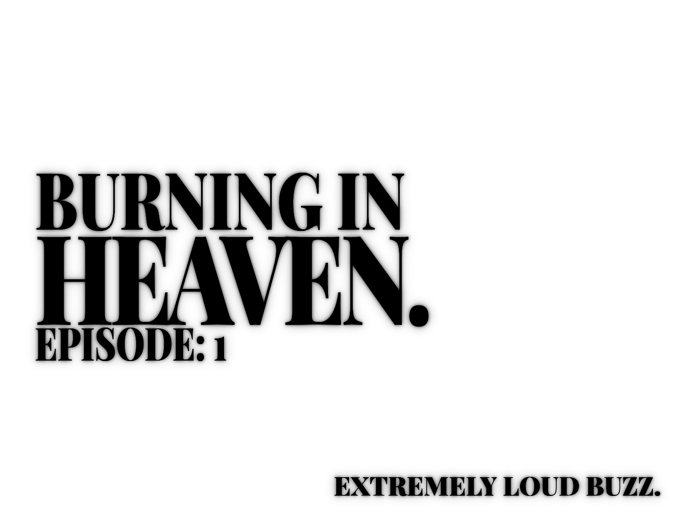

The first angel appeared above the North Sea at 04:13 UTC.
There was no entrance, no trumpets.
Radar operators described it as a blind spot shaped like a person. Satellite feeds showed nothing just a hole where data should have been.
The fisherman saw it with their own eyes: a tall human, a female, its skin as white as plastic, a perfect human silhouette, symmetrical, silent, and devoid of the 'noise' of life. It was a masterpiece standing over a soon to be graveyard.
It's crucified.
No one prayed at first, all recording.
When the broadcasts started, the churches filled in minutes. Mosques overflowed into streets. Every religion recognized the shape before it recognized the intent.
An angel.
People were expecting love and kindness.
The angel moved like an animal.
It folded in on itself, wings bending the wrong way, joints popping quietly like cooling metal.
It was heading toward the coast.
Cameras tried to follow it. Some feeds froze. Others showed frames out of order seconds repeating, then skipping. A fisherman screamed when the angel looked at him, not because it was angry, but because it noticed him the way a person notices dust.
Phones buzzed at the same time. Emergency alerts, all identical, all unsigned.
Traffic locked instantly. People abandoned cars in intersections, running, praying, filming, calling names that didn't answer back. Above them, the angel accelerated, its movement no longer crawling, no longer walking adjusting, snapping back into a normal human form.
When it reached the city, it stood upright again.
Perfect. Still.
Then the light started.
Not a beam. Not an explosion. The air itself brightened, like exposure being turned up on reality. People vanished midstep. Buildings emptied without collapsing. Shadows remained where bodies had been, burned into concrete and glass.
There were no screams for long.
The angel did not look around to admire its work. It turned its head toward the horizon, as if listening.
You can still hear the alarm.
An extremely loud buzz.
00 // EXTREMELY LOUD BUZZ stands for the Rupture of the Medium. It signifies the sound of the atmosphere rushing to fill the vacuum left behind by the vanished. When the angel "brightens" reality, it isn't killing people; it is displacing them. The buzz is the feedback loop of a world that suddenly has millions of human shaped holes in it. It is the sound of a heaven that is already full, and the "burning" is the friction of us being forced back out.